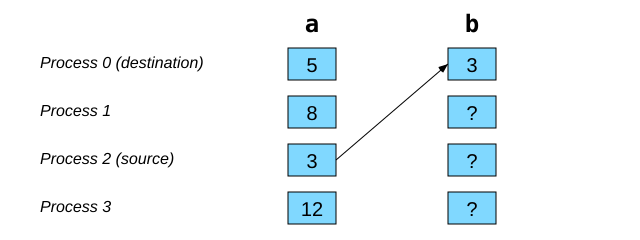
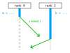
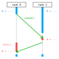
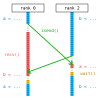
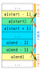

Point-to-point communications#
Point-to-point communications are local, which means that only two processes are involved: they are the only ones that call reciprocal communication functions and are the only ones involved in the exchange.
Send and receive functions are always called in pairs by different processes.
Send and receive functions can be blocking or non-blocking.
Sending and receiving (blocking)#
With mpi4py, data transmissions are made from a communicator (comm) and
the send() method:
comm.send(obj, dest=dest, tag=tag)
comm: for example,MPI.COMM_WORLD.obj: any object that can be serialized via pickle.dest: rank of receiving process (destination).tag: user-defined number (can be used to check reception).
Reciprocally, data reception occurs from the same communicator and the
recv() method:
data = comm.recv(source=source, tag=tag, status=status)
data: a variable or part of a modifiable object, to receive the deserialized object.source:MPI.ANY_SOURCE(default value) or the rank of a specific sender.tag:MPI.ANY_TAG(default value) or a specific tag.status:None(default value) or an object of typeMPI.Status..count: number of bytes received..source: rank of the source of the received message..tag: tag of the received message.
Example - Sending and receiving#
Each process has its own variables a and b. Process 2 sends the value
of its variable a to process 0, which receives this value in its variable
b.

With mpi4py, here is an implementation of this communication:
if rank == 2:
comm.send(a, dest=0, tag=746)
elif rank == 0:
b = comm.recv(source=2, tag=746)
Exercise #2 - Sending a matrix#
Objective: sending a 4x4 matrix from process 0 to process 1.
Instructions
Go to the exercise directory with
cd ~/mpi201-main/lab/send_matrix.Edit the file
send_matrix.pyto program the matrix transfer.Run this program with two (2) processes.
Avoiding deadlock situations#
{kind=link}

Consider the following code:
if rank == 0:
comm.ssend(a, dest=2, tag=10)
b = comm.recv(source=2, tag=11)
elif rank == 2:
comm.ssend(b, dest=0, tag=11)
a = comm.recv(source=0, tag=10)
The synchronous method
ssend()is a version ofsend()without a buffer, which makes it always blocking (send()may not block for small messages).In the above case, the two processes wait until the other calls
recv(). This code is hence buggy and causes a deadlock!And even with
send()instead ofssend(), the code is risky. The amount of buffer memory forsend()is not defined, so the code may eventually block when exchanging large messages.
Solution 1#
{kind=link}

Change the order of calls to ssend() and recv() for one of the two
processes. For example:
if rank == 0:
comm.ssend(a, dest=2, tag=10)
b = comm.recv(source=2, tag=11)
elif rank == 2:
a = comm.recv(source=0, tag=10)
comm.ssend(b, dest=0, tag=11)
One can generalize this technique to more processes:
Evenly ranked processes start by sending.
Oddly ranked processes start by receiving.
Exercise #3 - Exchange two lists#
Objective: exchange a small list with data.
Instructions
Go to the exercise directory with
cd ~/mpi201-main/lab/exchange.Edit the file
exchange.pyto program the data exchange.Run this program with two (2) processes.
Solution 2#
{kind=link}

Non-blocking communications are used to initiate the transfers. Even when the send hasn’t finished yet, each process can start the receive, so deadlocks are avoided. For example:
if rank == 0:
request = comm.isend(a, dest=2, tag=10)
b = comm.recv(source=2, tag=11)
elif rank == 2:
request = comm.isend(b, dest=0, tag=11)
a = comm.recv(source=0, tag=10)
request.wait()
In addition to unblocking both processes, this solution allows calculations to resume more quickly.
Non-blocking communications#
With mpi4py, the communicators have the following methods:
request = comm.isend(obj, dest, tag=0)
request.wait()
request = comm.irecv(source=ANY_SOURCE, tag=ANY_TAG)
data = request.wait(status=None)
You don’t need to make both send and receive non-blocking (all combinations are permitted).
After calling
isend()orirecv(), one must use therequestobject returned by the call to ensure that the communication has terminated.The
wait()method is blocking. When it returns, the communication has finished.During a reception, it is
request.wait()which returns the received data in a deserialized object.
Only once the communication has finished one can reuse the arrays that were sent or received!
Here is an example of an iterative calculation on an array a[] where each
process rank is responsible for the values at indices from start to
end - 1 (we will see later how to calculate start and end).
However, at each iteration, there must be an exchange of values at both
boundaries:

req_irecv_start_1 = comm.irecv(source=rank - 1, tag=ANY_TAG)
req_isend_start = comm.isend(a[start], dest=rank - 1, tag=0)
req_isend_end_1 = comm.isend(a[end - 1], dest=rank + 1, tag=0)
req_irecv_end = comm.irecv(source=rank + 1, tag=ANY_TAG)
for iteration in range(1000):
a[start - 1] = req_irecv_start_1.wait(status=None)
req_isend_start.wait()
a[start] = f(a[start - 1], a[start], a[start + 1])
req_irecv_start_1 = comm.irecv(source=rank - 1, tag=ANY_TAG)
req_isend_start = comm.isend(a[start], dest=rank - 1, tag=0)
for i in range(start + 1, end - 1): # start + 1 ... end - 2
a[i] = f(a[i - 1], a[i], a[i + 1])
req_isend_end_1.wait()
a[end] = req_irecv_end.wait(status=None)
a[end - 1] = f(a[end - 2], a[end - 1], a[end])
req_isend_end_1 = comm.isend(a[end - 1], dest=rank + 1, tag=0)
req_irecv_end = comm.irecv(source=rank + 1, tag=ANY_TAG)
a[start - 1] = req_irecv_start_1.wait(status=None)
req_isend_start.wait()
req_isend_end_1.wait()
a[end] = req_irecv_end.wait(status=None)
The use of non-blocking communications allows different operations to be performed during these numerous communications, which reduces the impact of communications on the efficiency of parallel computing.